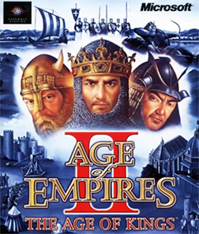

La Edad Media en tiempo real que se jugo en todos los cybers
02

AGE OF EMPIRES II: THE AGE OF KINGS
CONSOLAPC · Mac · PlayStation 2
AÑO1999
DESARROLLADOREnsemble Studios (Microsoft)
GENEROEstrategia en tiempo real
NO ESTA EN LA COLECCION
03
CONTEXTO DE EPOCA
Llegamos a 1999
Ensemble Studios pensaba terminarlo en un año, pero necesito otro y por eso lanzo antes la expansion Rise of Rome en 1998. Tras dos años, unas 50 personas y menos de 10 millones de dolares, llego la Edad Media con 13 civilizaciones: dos millones de copias en solo tres meses.
04
COMPARATIVA
PC · MAC · PLAYSTATION 2 · 1999
TARROVISIONCH 01
NO SIGNAL
Inserta gameplay aqui
VS
TARROVISIONCH 02
NO SIGNAL
Inserta gameplay aqui
05
JUGABILIDAD HOY
PC · MAC · PLAYSTATION 2 · 1999 · GAMEPLAY
TARROVISIONCH 03
NO SIGNAL
Inserta gameplay aqui
EL DATOAvanzas de la Edad Oscura a la Imperial juntando comida, madera, oro y piedra, y armas ejercitos con un piedra-papel-tijera de unidades. Esta entrega inventa el boton de aldeano ocioso y la campana del pueblo.
06
GRAFICOS Y SONIDO HOY
PC · MAC · PLAYSTATION 2 · 1999 · GAMEPLAY
TARROVISIONCH 04
NO SIGNAL
Inserta gameplay aqui
EL DATOGraficos 2D con mucho detalle y escala, aldeanos que hablan en el idioma de su civilizacion y una banda sonora de Stephen Rippy que mezcla culturas. Hay edificios tan grandes que da culpa quemarlos.
07
VEREDICTO RETROTARROS
IMPRESCINDIBLE
Hay que jugarlo por lo que sigue ofreciendo: una estrategia clara y profunda donde cada edad es una decision, campañas con Juana de Arco y Saladino, y un multijugador que mas de veinte años despues sigue vivo. Es uno de los RTS mas influyentes de su epoca.
08
RETROTARROS
SUSCRIBETE
Activa la campana para no perderte la proxima reseña. ¿Que juego quieres que revisemos? Comenta abajo.